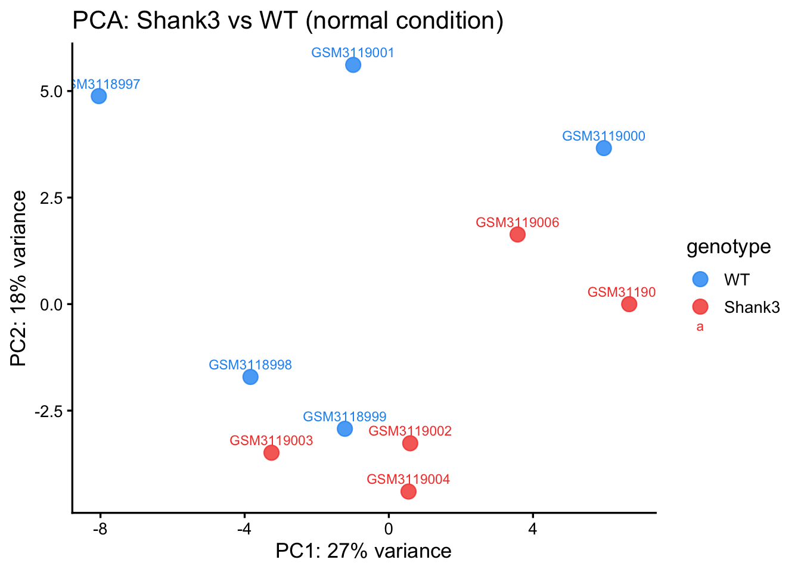
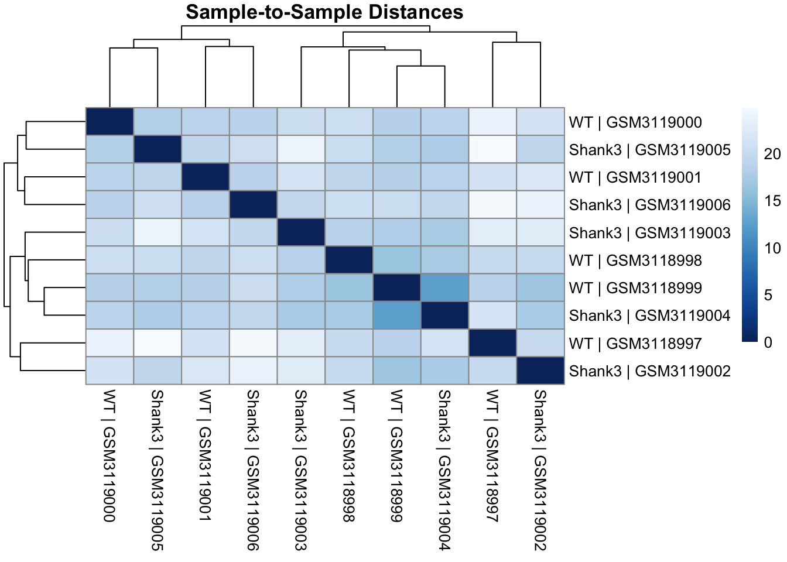
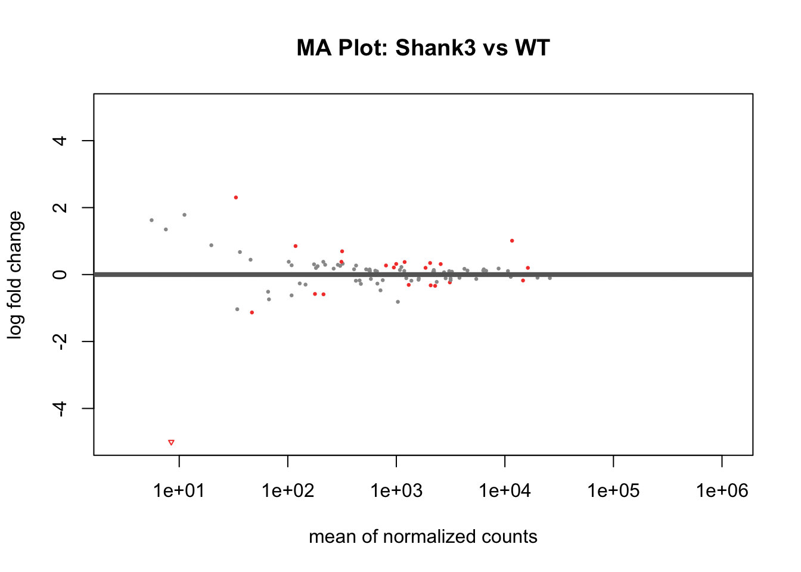
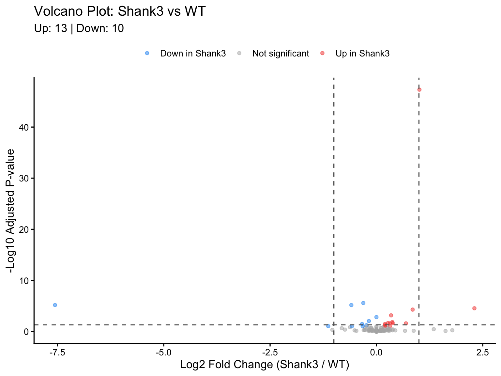

# To restore the exact package environment on a new machine:
renv::restore()
# To snapshot new packages you install:
renv::snapshot()Finding Differentially Expressed Genes with DESeq2
Workshop: Shank3 vs WT Genotype Comparison
🧬 Introduction
In this workshop we will use DESeq2 to identify differentially expressed genes between two genotypes: Shank3 and Wild Type (WT) mice.
We will work through a complete RNA-seq analysis pipeline:
- Load and inspect the data
- Set up the DESeq2 object
- Run the analysis
- Perform quality control
- Extract and interpret results
- Export tables and plots
Project Structure
This script assumes the following R project structure:
ShankProject/
├── renv/
├── renv.lock ← locked package versions (tracked by Git)
├── .Rprofile ← auto-activates renv
├── processed_data/
│ ├── Shank3_metadata_clean.csv
│ └── Shank3_rawCounts_clean.csv
├── raw_data/
│ ├── GSE113754_GeneLevel_Raw_data.csv
│ └── GSE113754_filtered_metadata.csv
├── scripts/
│ ├── 07-deseq2_pipeline.qmd
│ └── 07-setup_script.r ← ✅ installation script (run ONCE)
├── outputs/
└── README.mdEnvironment & Reproducibility
This project uses renv for package management and is version-controlled with Git/GitHub.
Part 1 — Setup
1.1 Load Required Packages
library(here)
library(DESeq2)
library(ggplot2)
library(dplyr)
library(tibble)
library(pheatmap)
library(RColorBrewer)
library(apeglm) # used by lfcShrink() in Part 7
Note
apeglm is loaded here even though we never call it directly — lfcShrink() reaches it via type = "apeglm". Because that’s a string, renv cannot see the dependency when it scans your code, so without this library() call renv::snapshot() leaves apeglm out of the lockfile and Part 7 fails for anyone who restores from it. Same reasoning for tibble, used as tibble::rownames_to_column().
1.2 Define File Paths
Why use here::here()? Using here() makes your paths relative to the project root, so the script works on any machine regardless of where the project folder is saved. This is especially important when sharing code via GitHub.
# In your own ShankProject the cleaned data sits at <project root>/processed_data,
# which is the first branch below. This page is published from the ARCS website
# repository, where the same two files ship alongside the workshop materials —
# the fallback keeps the published version reproducible without changing the
# path you would write in your own project.
dir_data <- if (dir.exists(here("processed_data"))) {
here("processed_data")
} else {
here("workshops", "arcs_04", "_materials", "processed_data")
}
dir_out <- if (dir.exists(here("processed_data"))) {
here("outputs")
} else {
here("workshops", "arcs_04", "_materials", "outputs")
}
# Input paths
path_counts <- file.path(dir_data, "Shank3_rawCounts_clean.csv")
path_metadata <- file.path(dir_data, "Shank3_metadata_clean.csv")
# Output paths
path_figures <- file.path(dir_out, "figures")
path_tables <- file.path(dir_out, "tables")
# Create output folders if they do not exist yet
for (dir in c(path_figures, path_tables)) {
if (!dir.exists(dir)) {
dir.create(dir, recursive = TRUE)
cat("✅ Created:", dir, "\n")
}
}📂 Part 2 — Load & Inspect the Data
2.1 Load Raw Counts
clean_counts <- read.csv(path_counts, header = TRUE, row.names = 1)Quick inspection:
cat("Dimensions: ", nrow(clean_counts), "genes x", ncol(clean_counts), "samples\n")Dimensions: 28886 genes x 20 sampleshead(clean_counts[, 1:5]) # show first 5 samples only GSM3118997 GSM3118998 GSM3118999 GSM3119000 GSM3119001
ENSMUSG00000000001|Gnai3 1689 1278 2153 828 1146
ENSMUSG00000000003|Pbsn 0 0 0 0 0
ENSMUSG00000000028|Cdc45 92 71 110 52 60
ENSMUSG00000000031|H19 2 4 8 2 2
ENSMUSG00000000037|Scml2 77 62 131 35 73
ENSMUSG00000000049|Apoh 17 20 26 4 132.2 Load Metadata
clean_info <- read.csv(path_metadata, header = TRUE, stringsAsFactors = TRUE)Quick inspection:
print(clean_info) sample_id genotype condition geno_cond
1 GSM3118997 WT normal WT_normal
2 GSM3118998 WT normal WT_normal
3 GSM3118999 WT normal WT_normal
4 GSM3119000 WT normal WT_normal
5 GSM3119001 WT normal WT_normal
6 GSM3119002 Shank3 normal Shank3_normal
7 GSM3119003 Shank3 normal Shank3_normal
8 GSM3119004 Shank3 normal Shank3_normal
9 GSM3119005 Shank3 normal Shank3_normal
10 GSM3119006 Shank3 normal Shank3_normal
11 GSM3119007 WT sleep_deprived WT_sleep_deprived
12 GSM3119008 WT sleep_deprived WT_sleep_deprived
13 GSM3119009 WT sleep_deprived WT_sleep_deprived
14 GSM3119010 WT sleep_deprived WT_sleep_deprived
15 GSM3119011 WT sleep_deprived WT_sleep_deprived
16 GSM3119012 Shank3 sleep_deprived Shank3_sleep_deprived
17 GSM3119013 Shank3 sleep_deprived Shank3_sleep_deprived
18 GSM3119014 Shank3 sleep_deprived Shank3_sleep_deprived
19 GSM3119015 Shank3 sleep_deprived Shank3_sleep_deprived
20 GSM3119016 Shank3 sleep_deprived Shank3_sleep_deprived
ImportantDo the columns in the counts matrix match the rows in the metadata?
The column names of the counts matrix must match the sample identifiers in the metadata, in the same order. This is a very common source of errors — check it before you build anything downstream.
all(colnames(clean_counts) == clean_info$sample_id)[1] TRUE# Should return TRUE — if FALSE, reorder before proceeding✂️ Part 3 — Subset to a Simple Two-Group Comparison
Why subset? The full dataset contains samples from two conditions (normal and sleep-deprived) and two genotypes (WT and Shank3).
For this workshop we focus on a simple two-group comparison: Shank3 vs WT, using only the normal condition samples. This keeps the design formula simple and the results easier to interpret.
3.1 Keep only samples from the normal (baseline) condition
info_sub <- clean_info %>% filter(condition == "normal")3.2 Subset counts to matching samples
counts_sub <- clean_counts[, info_sub$sample_id]3.3 Drop unused factor levels after subsetting
info_sub$genotype <- droplevels(info_sub$genotype)3.4 Set WT as the reference level (baseline for comparison)
info_sub$genotype <- relevel(info_sub$genotype, ref = "WT")3.5 Confirm subset dimensions
cat("Subsetted dataset:", nrow(counts_sub), "genes x", ncol(counts_sub), "samples\n")Subsetted dataset: 28886 genes x 10 samplesprint(info_sub) sample_id genotype condition geno_cond
1 GSM3118997 WT normal WT_normal
2 GSM3118998 WT normal WT_normal
3 GSM3118999 WT normal WT_normal
4 GSM3119000 WT normal WT_normal
5 GSM3119001 WT normal WT_normal
6 GSM3119002 Shank3 normal Shank3_normal
7 GSM3119003 Shank3 normal Shank3_normal
8 GSM3119004 Shank3 normal Shank3_normal
9 GSM3119005 Shank3 normal Shank3_normal
10 GSM3119006 Shank3 normal Shank3_normal🏗️ Part 4 — Build the DESeq2 Object
4.1 Create DESeqDataSet
dds <- DESeqDataSetFromMatrix(
countData = counts_sub, # genes x samples count matrix
colData = info_sub, # sample metadata
design = ~ genotype # simple two-group design
)
NoteUnderstanding the design formula
~ genotype tells DESeq2 to model gene expression as a function of genotype.
With WT set as the reference, all results will be expressed as Shank3 relative to WT.
4.2 Pre-filter Low-Count Genes
Keep genes with at least 10 counts in at least 3 samples (adjust thresholds based on your smallest group size).
keep <- rowSums(counts(dds) >= 10) >= 3
dds <- dds[keep, ]
cat("Genes remaining after filtering:", nrow(dds), "\n")Genes remaining after filtering: 15742 🔬 Part 5 — Run DESeq2
dds <- DESeq(dds)
NoteWhat does
DESeq() do?
Three steps happen automatically:
- Size factor estimation — normalizes for differences in sequencing depth
- Dispersion estimation — models count variability across samples
- Model fitting — fits a negative binomial GLM and tests each gene
📊 Part 6 — Quality Control
6.1 Transform Counts for Visualization
vst = Variance Stabilizing Transformation. It is faster than rlog() for larger datasets; both are suitable for QC.
vsd <- vst(dds, blind = TRUE)
Note
blind = TRUE vs blind = FALSE
blind = TRUE— the transformation ignores the design (used for QC and exploration)blind = FALSE— the transformation uses the design (used for downstream visualization of results)
6.2 PCA Plot
TipWhat to look for in the PCA
- Samples should cluster by genotype along PC1 (the axis of greatest variation)
- Any outlier samples should be investigated before proceeding
- If genotype is not the dominant source of variation, review your metadata
pca_data <- plotPCA(vsd, intgroup = "genotype", returnData = TRUE)
pct_var <- round(100 * attr(pca_data, "percentVar"))
pca_plot <- ggplot(pca_data, aes(x = PC1, y = PC2, color = genotype, label = name)) +
geom_point(size = 4, alpha = 0.8) +
geom_text(vjust = -0.8, size = 3) +
scale_color_manual(values = c("WT" = "#2196F3", "Shank3" = "#F44336")) +
labs(
title = "PCA: Shank3 vs WT (normal condition)",
x = paste0("PC1: ", pct_var[1], "% variance"),
y = paste0("PC2: ", pct_var[2], "% variance")
) +
theme_classic(base_size = 13) +
theme(legend.position = "right")
pca_plot
# Save
ggsave(
filename = file.path(path_figures, "PCA_Shank3vsWT.png"),
plot = pca_plot, width = 7, height = 5, dpi = 300
)6.3 Sample Distance Heatmap
samp_dists <- dist(t(assay(vsd)))
samp_mat <- as.matrix(samp_dists)
rownames(samp_mat) <- colnames(samp_mat) <-
paste(colData(vsd)$genotype, colData(vsd)$sample_id, sep = " | ")
colors <- colorRampPalette(rev(brewer.pal(9, "Blues")))(255)
# Display inline
pheatmap(samp_mat, col = colors,
clustering_distance_rows = samp_dists,
clustering_distance_cols = samp_dists,
main = "Sample-to-Sample Distances",
fontsize = 10)
# Save to file
pheatmap(samp_mat, col = colors,
clustering_distance_rows = samp_dists,
clustering_distance_cols = samp_dists,
main = "Sample-to-Sample Distances", fontsize = 10,
filename = file.path(path_figures, "SampleDistances_Shank3vsWT.png"))📈 Part 7 — Extract & Interpret Results
7.1 Check Available Coefficients
resultsNames(dds)[1] "Intercept" "genotype_Shank3_vs_WT"7.2 Extract Results: Shank3 vs WT
# alpha sets the FDR threshold used for independent filtering
res <- results(dds, name = "genotype_Shank3_vs_WT", alpha = 0.05)
summary(res)
out of 15742 with nonzero total read count
adjusted p-value < 0.05
LFC > 0 (up) : 10, 0.064%
LFC < 0 (down) : 6, 0.038%
outliers [1] : 1, 0.0064%
low counts [2] : 0, 0%
(mean count < 3)
[1] see 'cooksCutoff' argument of ?results
[2] see 'independentFiltering' argument of ?results
NoteUnderstanding the results columns
| Column | Meaning |
|---|---|
baseMean |
Average normalized count across all samples |
log2FoldChange |
Log2 ratio of Shank3 / WT |
lfcSE |
Standard error of the log2 fold change |
stat |
Wald test statistic |
pvalue |
Raw p-value |
padj |
Adjusted p-value (FDR) — use this for significance testing |
7.3 Shrink Fold Changes (Recommended)
# lfcShrink improves fold change estimates for genes with low counts.
# This is recommended for ranking and visualization — NOT for hypothesis testing.
res_shrunk <- lfcShrink(dds, coef = "genotype_Shank3_vs_WT", type = "apeglm")
summary(res_shrunk)
out of 15742 with nonzero total read count
adjusted p-value < 0.1
LFC > 0 (up) : 13, 0.083%
LFC < 0 (down) : 10, 0.064%
outliers [1] : 1, 0.0064%
low counts [2] : 0, 0%
(mean count < 3)
[1] see 'cooksCutoff' argument of ?results
[2] see 'independentFiltering' argument of ?results
TipWhy shrink fold changes?
Genes with low counts can have artificially extreme fold changes due to high variability. lfcShrink() pulls these estimates towards zero, making volcano plots and ranked gene lists more reliable.
Use res_shrunk for visualization. Use res for hypothesis testing.
7.4 MA Plot
# Save to file
png(file.path(path_figures, "MAplot_Shank3vsWT.png"),
width = 700, height = 500, res = 120)
plotMA(res_shrunk, ylim = c(-5, 5),
main = "MA Plot: Shank3 vs WT",
alpha = 0.1,
colSig = "#F44336",
colNonSig = "grey60")
invisible(dev.off())
# Display inline
plotMA(res_shrunk, ylim = c(-5, 5),
main = "MA Plot: Shank3 vs WT",
alpha = 0.1,
colSig = "#F44336",
colNonSig = "grey60")
7.5 Volcano Plot
res_df <- as.data.frame(res_shrunk) %>%
tibble::rownames_to_column("gene") %>%
filter(!is.na(padj)) %>%
mutate(
significance = case_when(
padj < 0.1 & log2FoldChange > 0 ~ "Up in Shank3",
padj < 0.1 & log2FoldChange < 0 ~ "Down in Shank3",
TRUE ~ "Not significant"
)
)
deg_counts <- table(res_df$significance)
deg_counts
Down in Shank3 Not significant Up in Shank3
10 15718 13 volcano_plot <- ggplot(res_df, aes(x = log2FoldChange, y = -log10(padj), color = significance)) +
geom_point(alpha = 0.5, size = 1.5) +
scale_color_manual(values = c(
"Up in Shank3" = "#F44336",
"Down in Shank3" = "#2196F3",
"Not significant" = "grey70"
)) +
geom_vline(xintercept = c(-1, 1), linetype = "dashed", color = "grey40") +
geom_hline(yintercept = -log10(0.05), linetype = "dashed", color = "grey40") +
labs(
title = "Volcano Plot: Shank3 vs WT",
subtitle = paste0(
"Up: ", deg_counts["Up in Shank3"],
" | Down: ", deg_counts["Down in Shank3"]
),
x = "Log2 Fold Change (Shank3 / WT)",
y = "-Log10 Adjusted P-value",
color = NULL
) +
theme_classic(base_size = 13) +
theme(legend.position = "top")
volcano_plot
ggsave(file.path(path_figures, "Volcano_Shank3vsWT.png"),
plot = volcano_plot, width = 8, height = 6, dpi = 300)💾 Part 8 — Export Results
8.1 Filter Significant DEGs
# All results (sorted by adjusted p-value)
res_all <- as.data.frame(res_shrunk) %>%
tibble::rownames_to_column("gene") %>%
arrange(padj)
# Significant DEGs only (padj < 0.05, |LFC| > 1)
res_sig <- res_all %>% filter(padj < 0.05, abs(log2FoldChange) > 1)
cat("Total DEGs (padj < 0.05, |LFC| > 1):", nrow(res_sig), "\n")Total DEGs (padj < 0.05, |LFC| > 1): 3 head(res_sig) gene baseMean log2FoldChange lfcSE
1 ENSMUSG00000022623|Shank3 11641.383390 1.011188 0.06736548
2 ENSMUSG00000101360|4933417O13Rik 8.445198 -7.556521 2.67268453
3 ENSMUSG00000027376|Prom2 33.290273 2.303614 0.44408736
pvalue padj
1 3.057212e-52 4.812357e-48
2 1.264739e-09 6.636086e-06
3 9.133472e-09 2.875400e-058.2 Save Results Tables
# Full results table
write.csv(res_all, file = file.path(path_tables, "DESeq2_Shank3vsWT_allGenes.csv"),
row.names = FALSE)
# Significant DEGs only
write.csv(res_sig, file = file.path(path_tables, "DESeq2_Shank3vsWT_sigDEGs.csv"),
row.names = FALSE)
# Normalised counts
norm_counts <- counts(dds, normalized = TRUE)
write.csv(norm_counts, file = file.path(path_tables, "normCounts_Shank3vsWT.csv"),
row.names = TRUE)
cat("✅ Tables saved to outputs/tables \n")✅ Tables saved to outputs/tables 🔁 Part 9 — Reproducibility Session Information
Code
sessionInfo()R version 4.6.0 (2026-04-24)
Platform: aarch64-apple-darwin23
Running under: macOS Tahoe 26.5.2
Matrix products: default
BLAS: /Library/Frameworks/R.framework/Versions/4.6/Resources/lib/libRblas.0.dylib
LAPACK: /Library/Frameworks/R.framework/Versions/4.6/Resources/lib/libRlapack.dylib; LAPACK version 3.12.1
locale:
[1] en_US.UTF-8/en_US.UTF-8/en_US.UTF-8/C/en_US.UTF-8/en_US.UTF-8
time zone: America/New_York
tzcode source: internal
attached base packages:
[1] stats4 stats graphics grDevices datasets utils methods
[8] base
other attached packages:
[1] apeglm_1.34.0 RColorBrewer_1.1-3
[3] pheatmap_1.0.13 tibble_3.3.1
[5] dplyr_1.2.1 ggplot2_4.0.3
[7] DESeq2_1.52.0 SummarizedExperiment_1.42.0
[9] Biobase_2.72.0 MatrixGenerics_1.24.0
[11] matrixStats_1.5.0 GenomicRanges_1.64.0
[13] Seqinfo_1.2.0 IRanges_2.46.0
[15] S4Vectors_0.50.1 BiocGenerics_0.58.1
[17] generics_0.1.4 here_1.0.2
loaded via a namespace (and not attached):
[1] gtable_0.3.6 xfun_0.59 lattice_0.22-9
[4] numDeriv_2016.8-1.1 vctrs_0.7.3 tools_4.6.0
[7] parallel_4.6.0 pkgconfig_2.0.3 Matrix_1.7-5
[10] S7_0.2.2 lifecycle_1.0.5 compiler_4.6.0
[13] farver_2.1.2 textshaping_1.0.5 codetools_0.2-20
[16] htmltools_0.5.9 yaml_2.3.12 pillar_1.11.1
[19] MASS_7.3-65 BiocParallel_1.46.0 DelayedArray_0.38.2
[22] emdbook_1.3.14 abind_1.4-8 tidyselect_1.2.1
[25] locfit_1.5-9.12 bdsmatrix_1.3-7 digest_0.6.39
[28] mvtnorm_1.4-2 labeling_0.4.3 rprojroot_2.1.1
[31] fastmap_1.2.0 grid_4.6.0 cli_3.6.6
[34] SparseArray_1.12.2 magrittr_2.0.5 S4Arrays_1.12.0
[37] withr_3.0.3 scales_1.4.0 rmarkdown_2.31
[40] XVector_0.52.0 otel_0.2.0 ragg_1.5.2
[43] coda_0.19-4.1 evaluate_1.0.5 knitr_1.51
[46] bbmle_1.0.25.1 rlang_1.2.0 Rcpp_1.1.2
[49] glue_1.8.1 BiocManager_1.30.27 renv_1.2.3
[52] jsonlite_2.0.0 R6_2.6.1 plyr_1.8.9
[55] systemfonts_1.3.2
TipSaving your renv snapshot
After the workshop, lock your package versions so results are reproducible:
renv::snapshot()Then commit the updated renv.lock to GitHub:
git add renv.lock
git commit -m "update renv snapshot after workshop"
git push📚 Summary
| Step | What we did |
|---|---|
| Load data | Read counts matrix and sample metadata |
| Subset | Kept only normal-condition samples for a clean 2-group comparison |
| Pre-filter | Removed genes with very low counts |
| DESeq2 | Ran normalisation, dispersion estimation and Wald test |
| QC | PCA and sample distance heatmap |
| Results | Extracted Shank3 vs WT comparison with LFC shrinkage |
| Visualize | MA plot, volcano plot, top gene counts |
| Export | Saved tables to outputs/tables/ and plots to outputs/figures/ |
Note🔭 Next Steps (beyond this workshop)
- Gene Ontology (GO) enrichment analysis with
clusterProfilerandfgsea - Heatmap of top DEGs with
pheatmap - More complex designs: adding condition and interaction terms
Next up: Apptainer — running this same pipeline inside a container, so the environment travels with the code.